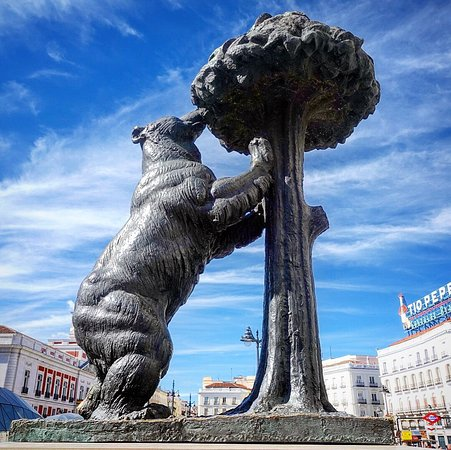
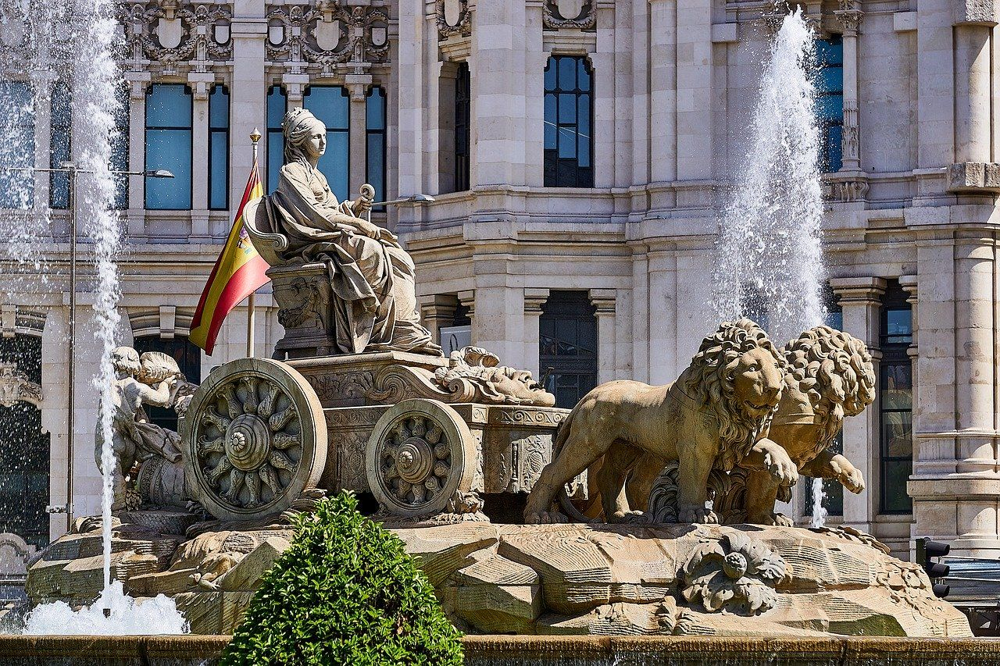

Información:
Madrid es la capital central de España con elegantes bulevares y amplios parques muy cuidados, como el Buen Retiro.
Es famosa por sus ricas colecciones de arte europeo, con obras de Goya, Velázquez y otros maestros españoles en el Museo del Prado.
El corazón del antiguo Madrid de los Habsburgo es la Plaza Mayor bordeada de pórticos y cerca se encuentra el Palacio Real y la Armería, que exhiben arsenales históricos.
5 curiosidades de Madrid:
- El nombre de Madrid proviene del árabe:Mayrit o Magerit, que significa sitio de abundante agua, en referencia a la abundancia de ríos que había en la zona, fue el nombre de la ciudad mientras estuvo bajo la dominación musulmana, desde el año 852 al 1085.
- A algunos madrileños se les conoce como gatos. Cuenta la leyenda que cuando Alfonso VI atacó Mayrit, ante la muralla defensiva que rodeaba la ciudad, un chico escaló con la única ayuda de una cuerda y una daga. Cuando coronó la cima, retiró la bandera musulmana y colocó la de Alfonso VI. En reconocimiento al mérito, por sus habilidades felinas, lo apodaron Gato, sustituyendo al apellido original que tenía. No sólo se empezó a llamar “gato” a los descendientes del valeroso joven, sino a todo aquél que mostrase valentía.
- El símbolo de Madrid es el Oso y el Madroño: se trata de una estatua de 4 metros de altura
situada en la Puerta del Sol. Junto con el Km 0, es punto de encuentro entre los madrileños.
 - La Cibeles esconde un secreto: La fuente de la Cibeles, alberga, a 35 metros de profundidad,
la cámara acorazada del Banco de España.
 - Madrid tiene el restaurante mas antiguo del mundo: el restaurante Botin Sobrino fue fundado en el año 1725 y su especialidad es el cochinillo y el cordero asado.